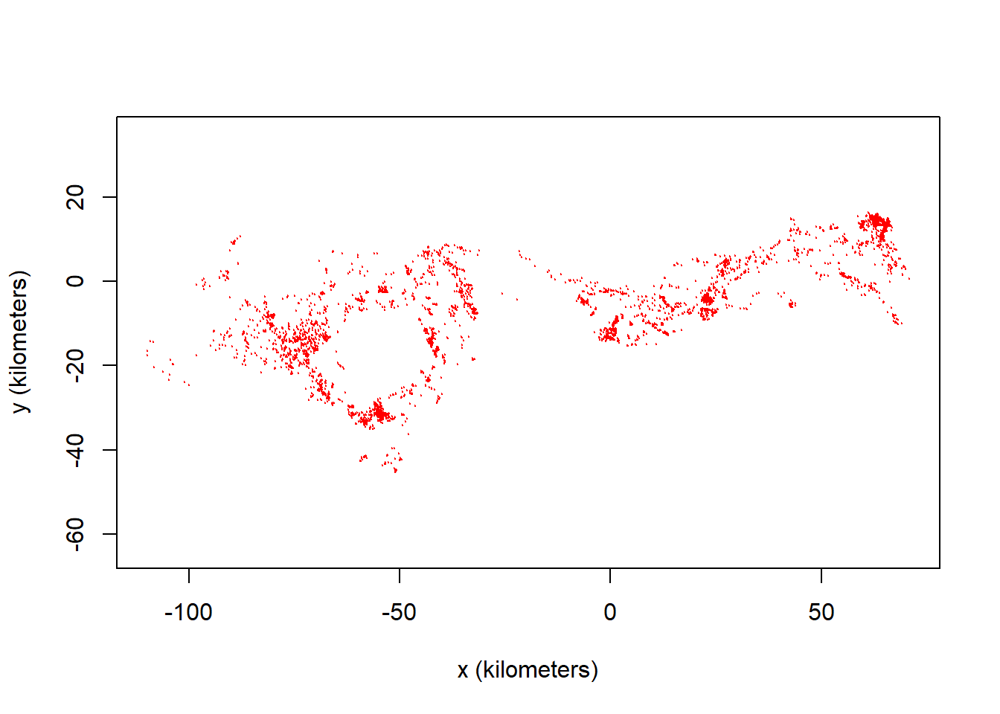
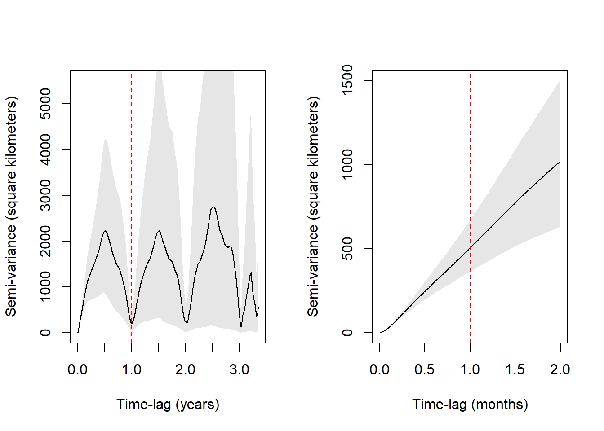

Minimum sampling interval of 28.4 minutes in 43161
Minimum sampling interval of 5.94 hours in 43162
Minimum sampling interval of 5.94 hours in 43163
Minimum sampling interval of 5.94 hours in 43164
plot(c1t)
DOP values missing. Assuming DOP=1.

Step 2 - Check for the range residency assumption
level <-0.95# we want to display 95% confidence intervalsxlim <-c(0,2%#%"month") # to create a window of 2 monthsSVF <-variogram(c1t)par(mfrow =c(1,2))plot(SVF, fraction =1, level = level)abline(v =1, col ="red", lty =2) # adding a line at 1 month plot(SVF, xlim = xlim, level = level)abline(v =1, col ="red", lty =2)

Step 3 - Select best-fit movement model through model selection
Calculate an automated model guesstimate
GUESS1 <-ctmm.guess(c1t, interactive =FALSE)# Automated model selection, starting from GUESSFIT1_ML <-ctmm.select(c1t, GUESS1, method ='ML')FIT1_pHREML <-ctmm.select(c1t, GUESS1, method ='pHREML')# Reminder: it will default to pHREML if no method is specified.summary(FIT1_ML)
$name
[1] "OUF anisotropic"
$DOF
mean area diffusion speed
4.826251 9.343750 1536.327623 3160.767593
$CI
low est high
area (square kilometers) 8244.194197 17719.851857 30759.228166
τ[position] (months) 2.514979 5.413527 11.652687
τ[velocity] (hours) 2.646270 2.810199 2.984284
speed (kilometers/day) 10.150593 10.330684 10.510731
diffusion (square kilometers/day) 11.815615 12.429440 13.058591
summary(FIT1_pHREML)
$name
[1] "OUF anisotropic"
$DOF
mean area diffusion speed
4.210549 6.247827 1533.577869 3160.141773
$CI
low est high
area (square kilometers) 7945.432902 21116.696350 40612.445514
τ[position] (months) 2.424391 6.452467 17.173107
τ[velocity] (hours) 2.645376 2.809241 2.983256
speed (kilometers/day) 10.151094 10.331212 10.511287
diffusion (square kilometers/day) 11.821063 12.435743 13.065784